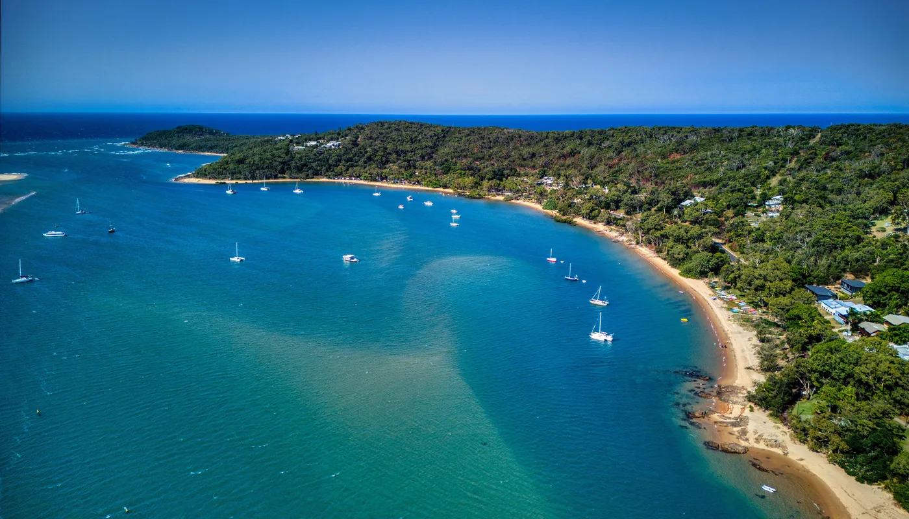
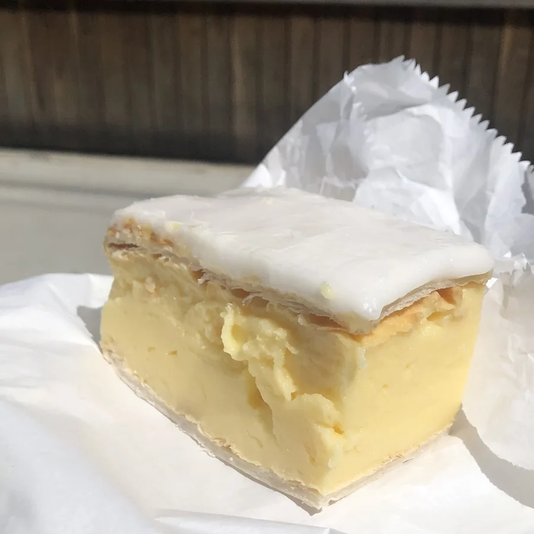
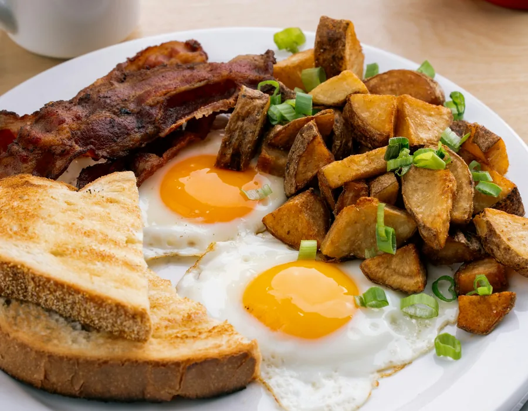
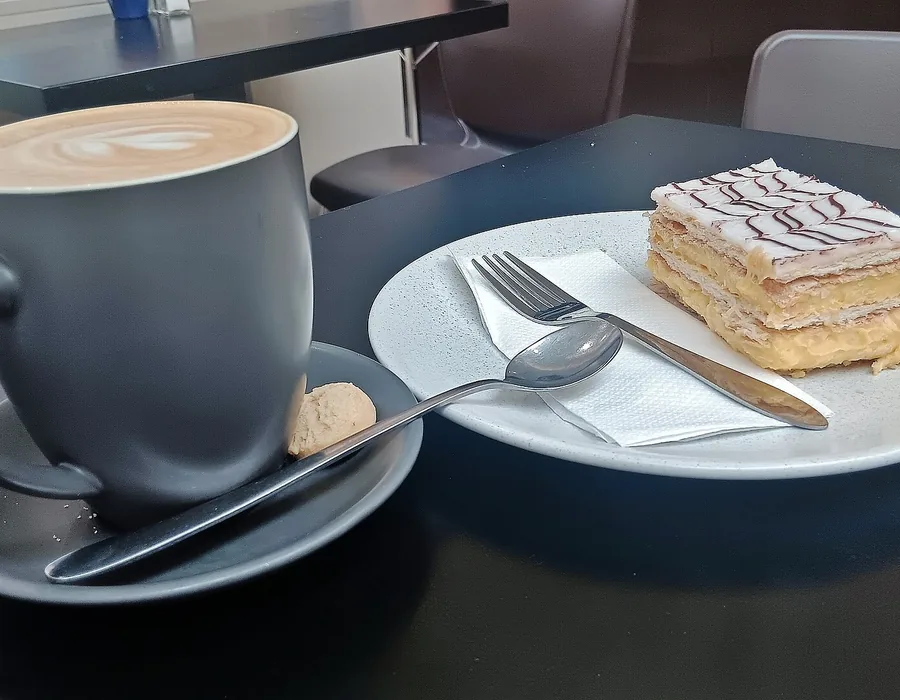

Breakfast
- The Full Breaky
- Eggs Benedict
- Bacon and egg rolls
- Omelettes and pancakes
Concept by George Mikaelson for 1770 Marina Cafe — not affiliated

Seventeen Seventy, Queensland
Coffee, breakfast and the vanilla slice everyone talks about, right on the marina by the boat ramp.
Made here, and cut big. It’s what our visitors mention most, and Phil’s slice has won the 1770 Festival’s Vanilla Slice War three years running.
Ask for one with your coffee, or take one on the boat.

Reef and LARC tours leave from right here, so breakfast starts early and comes to take away too. It gets busy around 8am, when the tours head out: come a little earlier, or a little later.
Mambo coffee with local Baffle milk. Have it on the deck, or in a cup for the trip.


Open from 6.30am every day. Closing time changes with the season, so call if you’re coming in the afternoon. Dogs are welcome at the outdoor tables.